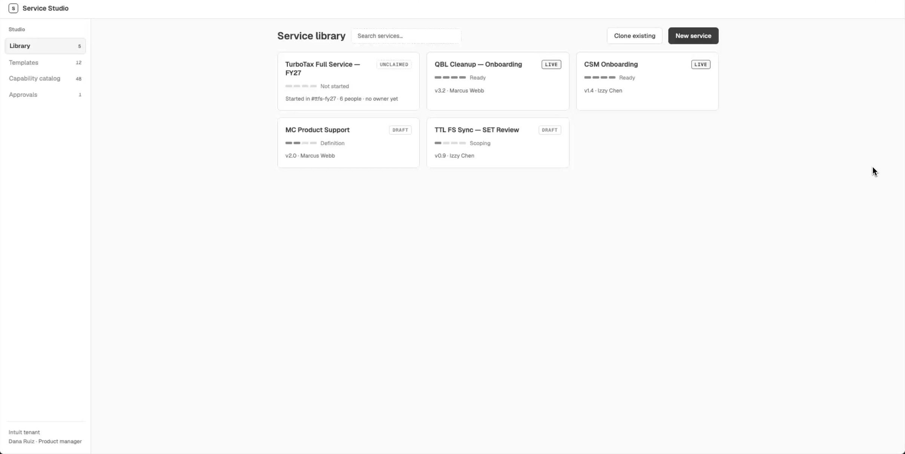
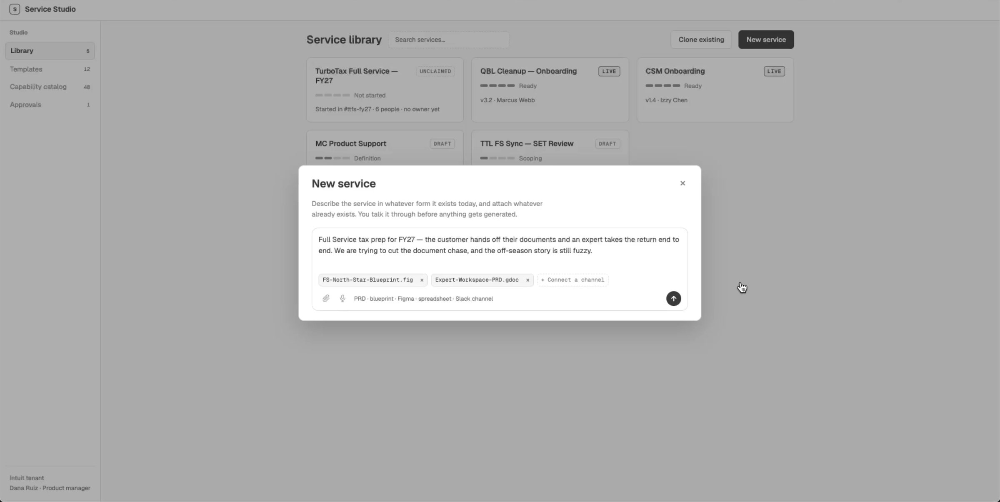
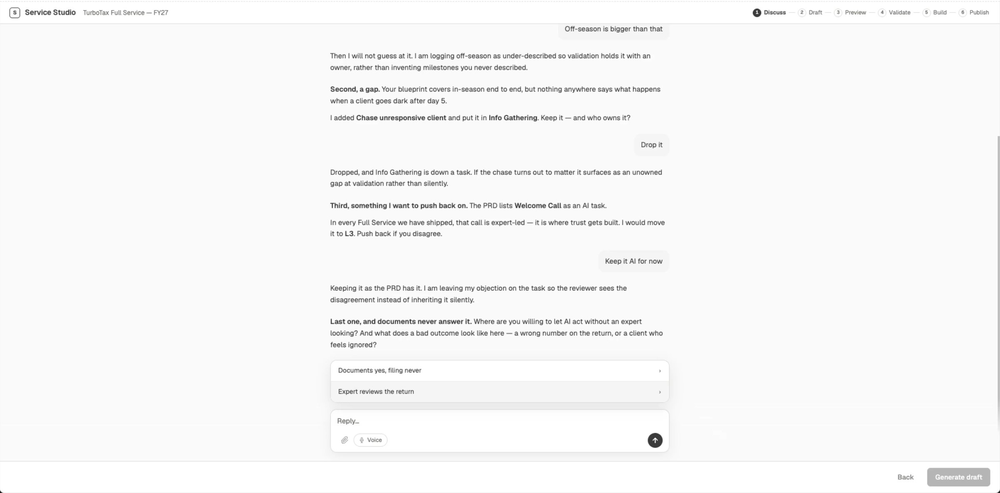
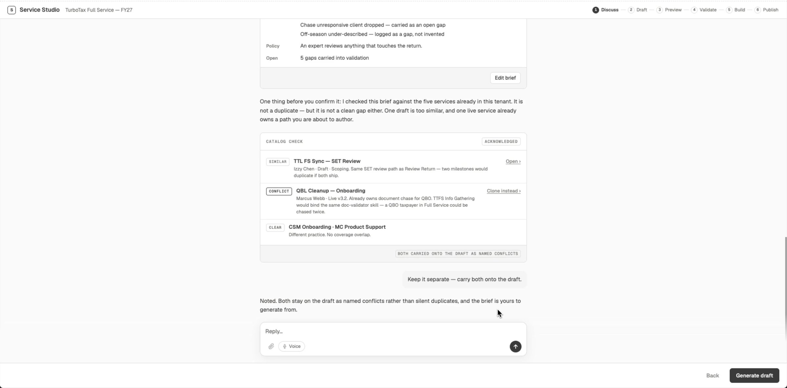
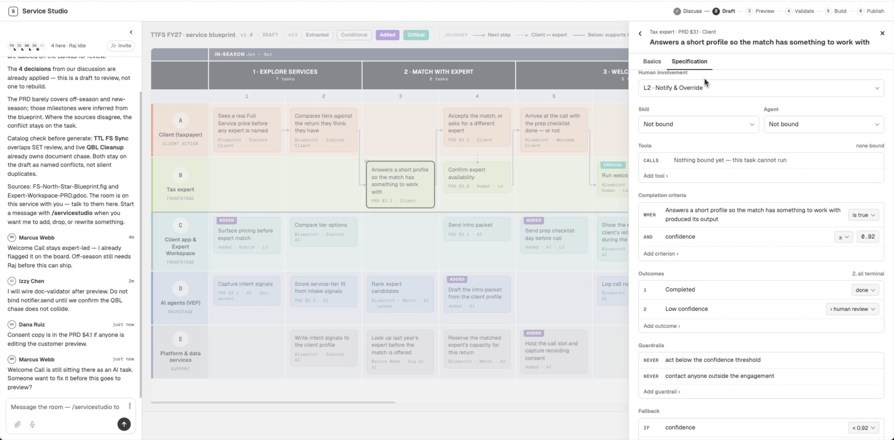
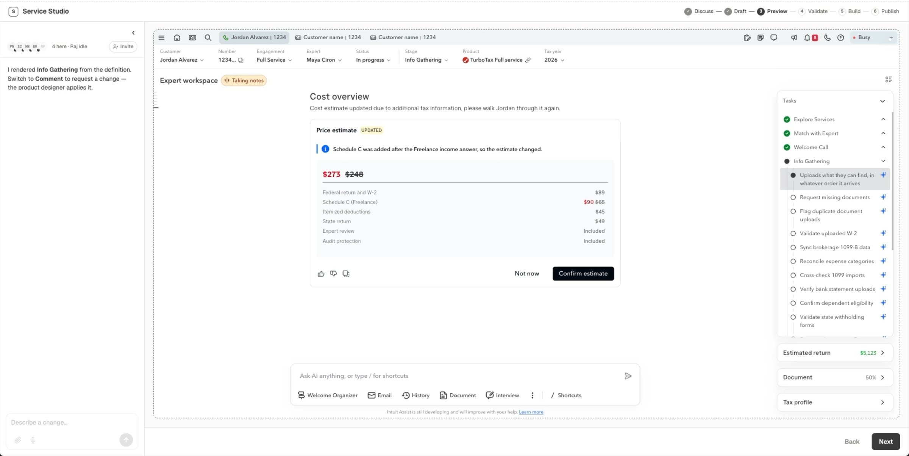
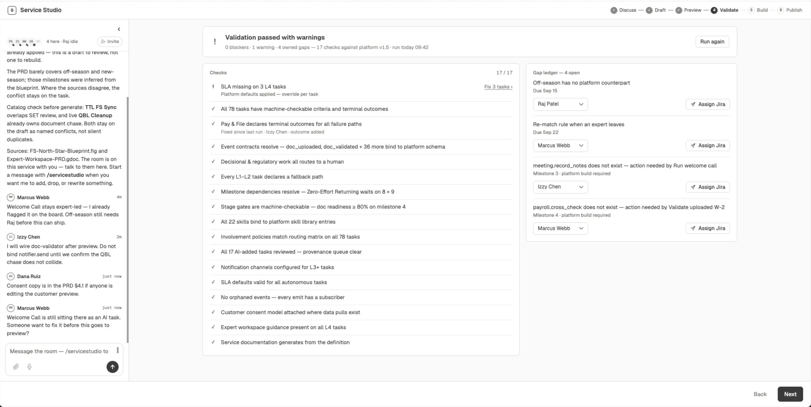
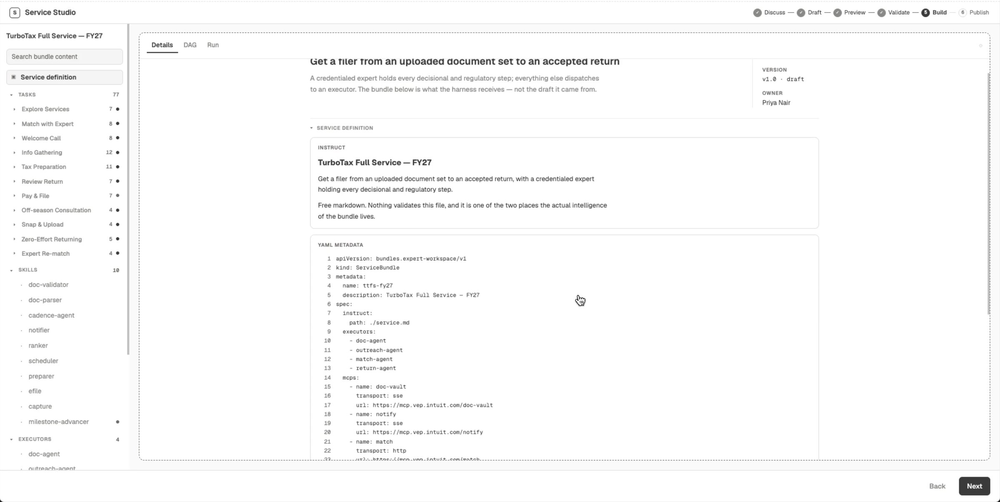
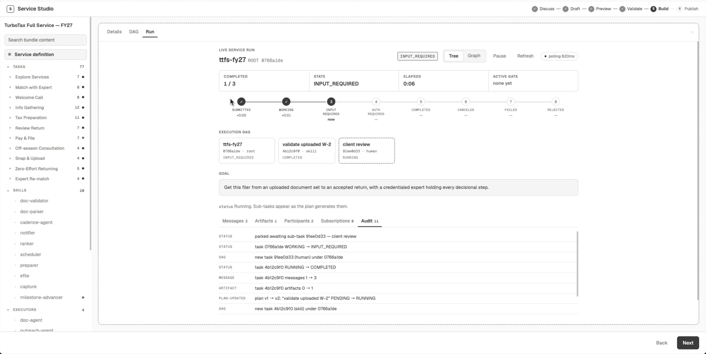
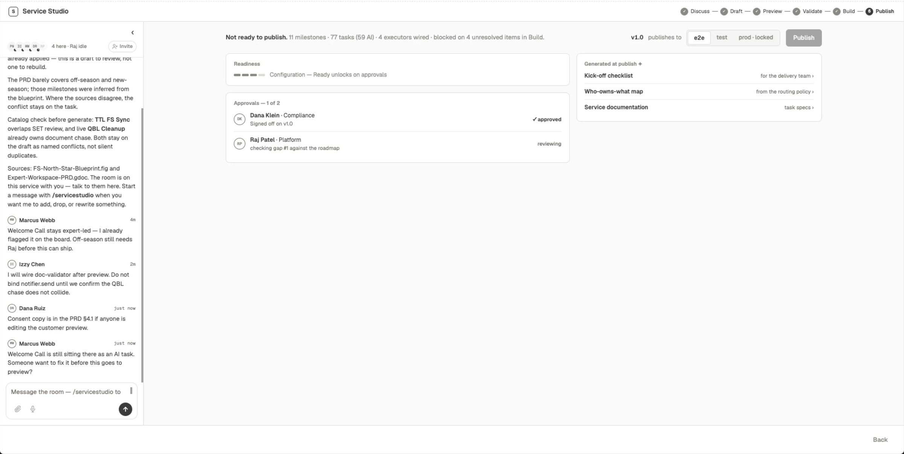

Intuit · Platform Design · Expert Workspace
Service Studio Assembled, not built.
A workspace where a new expert service gets fully defined before anyone builds it — so the quality of the definition is what makes the build fast.
Intuit · Platform Design · Expert Workspace
A workspace where a new expert service gets fully defined before anyone builds it — so the quality of the definition is what makes the build fast.
Where we are
Expert Workspace is the platform that routes tasks to experts and serves the customer. Two services run on it today — CSM and TTL — and each was added by hand, learned while we built it.
The backlog doesn't wait. One business group alone launches six or more services a year. Hand-assembling every one of them doesn't scale, and every shortcut taken on one service becomes the template for the next.
The Problem
A new service gets defined in business and operational terms, and stops there. What design draws, what engineering carries, what legal and operations have to sign — all of it gets settled downstream, by whoever hits the gap first. Not carelessness: there was never one artifact that asked for the rest of it.
Prototype walkthrough · library → intake → blueprint → preview → validate → build → publish
The Concept
Service Studio moves the work upstream. Design, standards and engineering happen once, at the platform level — not once per service. Each new service is the same parts, combined a different way.
Bespoke build
Every service a different shape, drawn from scratch. A deck, a Jira epic and a meeting recording stand in for the definition.
Assembled service
One structured definition that people can't misread — and that an agent can act on. Same artifact, both audiences.
01
It already knows the platform
Existing services, platform capabilities, journey structure, standards, agent skills and shipped bundles are loaded in. Drafting a service instead of discovering one.
02
Definition and output settle together
Generating is how you find out the definition is wrong. Nothing publishes until it holds — and every gap closed is inherited by the next service.
03
The Studio preps, people decide
A builder agent drafts, generates and asks. Product, Design, Development, Operations and Legal review and approve — instead of meeting to align.
Prototype Walkthrough
I prototyped the end-to-end flow to make the idea concrete for leadership — following one service, TurboTax Full Service FY27, from a rough brief to a governed publish.











Who does what
The readiness view goes out before the meeting, so the meeting starts at the decisions. Each craft answers one question:
Where we'd start
I broke the Studio into six shippable pieces so leadership could make the sequencing call. The blueprint canvas is the spine the other five assume.
A
Conversational intake
Start from a brief, a deck or a PRD — the agent asks for the rest.
B
Service catalog
Every service already running, checked before anything new is drafted.
C
Blueprint canvas
The structured definition — personas, milestones, steps and specs.
D
Workspace preview
See the service as experts and customers will, before it's built.
E
Readiness & validation
Covered, open or blocked — per craft, with an owner on every gap.
F
Governed publish
Nothing ships until the definition holds and approvals are in.
2→n
Services on the platform
6+
New services a year, one group alone
4+
Review rounds per design cycle today
6
Shippable pieces, one spine
Agent-ready
Agents accelerate execution against a clear plan. They can't decide what the plan is — and that's the part of our own lifecycle nobody had designed. A definition an agent can act on is one people can't misread.
The measurement gap is the same story: every lifecycle metric starts the clock at "In Progress," and everything the Studio touches happens before that. So part of the proposal is instrumenting time-to-launch, design churn, post-launch rework and quality variance across experts — you can't hold a team to a span nobody times.
The Ask
Clarity up front is the whole proposal: fewer meetings to align, a build nothing moves under, and a service the next one inherits. The ask to leadership — start with the next service.
Working material from design discovery, not a committed roadmap. The prototype follows a worked example rather than a live service.